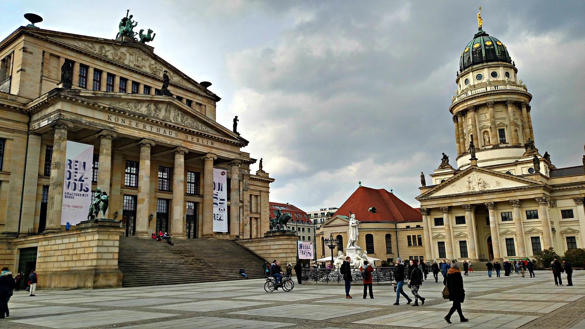
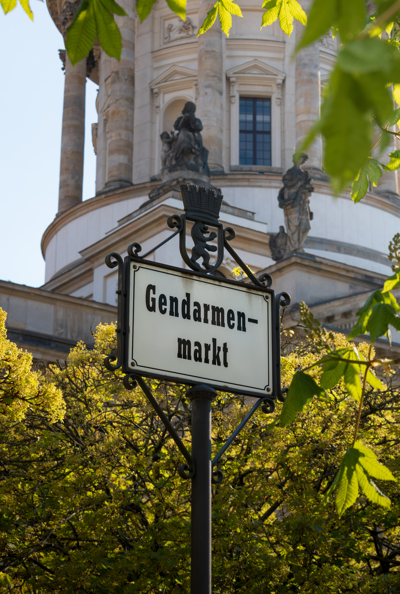
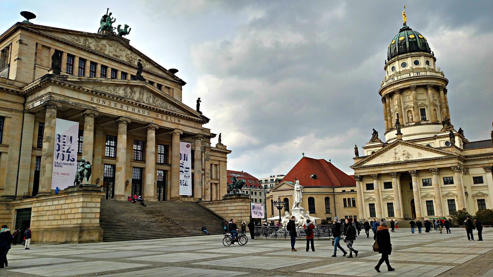
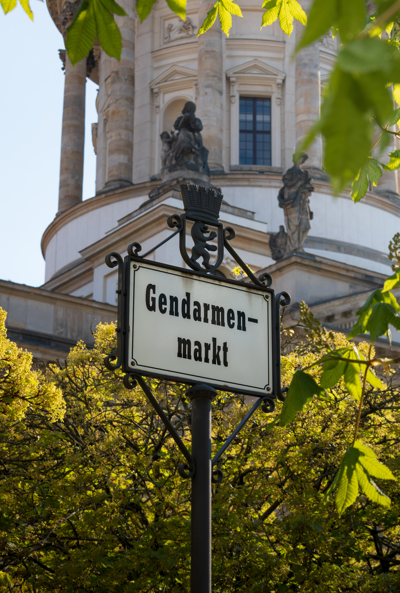
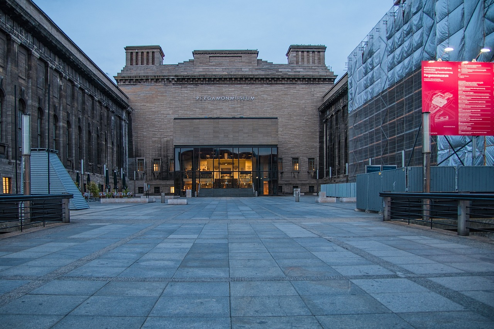
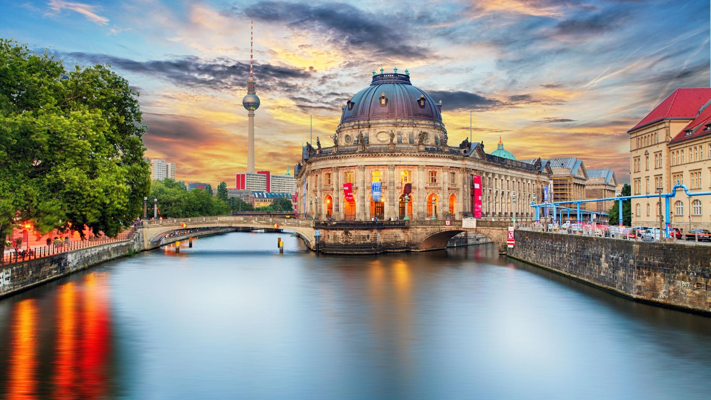
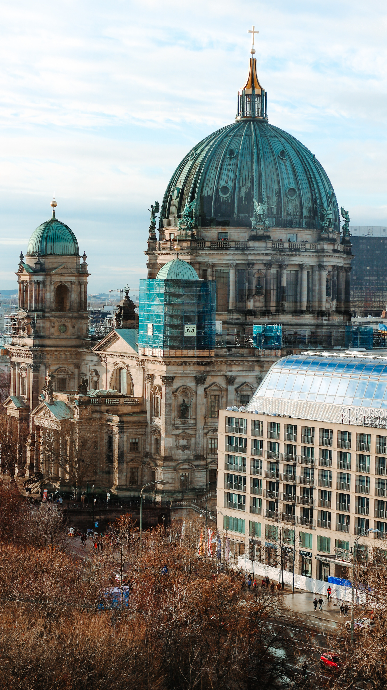

Berlin
Country of Germany
Berlin
Berlin is the city of art, artists and museums. In fact, precious artefacts from all over the world are showcased at more than 170 museums here, some of which can be found on the internationally renowned Museum Island. Berlin is a popular destination for classical music fans from every corner of the globe thanks to its leading orchestras, such as the globally popular Berlin Philharmonic, and the city's three huge opera houses, where spectacular operas and ballets are performed. And there is no end of theatre venues specialising in variety performances, revue, cabaret and more to ensure that there is something to keep everyone entertained.
"We can't choose where we come from but we can choose where we go from there"
 



Gendarmenmarkt
The Friedrichstadt quarter was built by Friedrich I at the end of the 17th century according to plans by Johann Arnold Nering. Its main residents were Huguenot refugees from France, which is why the French Protestant community was given one church on the square, and the Lutheran congregation the other.
The Brandenburg Gate
The Brandenburg Gate is one of the most iconic sights in today’s vibrant Berlin. More than just Berlin’s only surviving historical city gate, this site came to symbolise Berlin’s Cold War division into East and West – and, since the fall of the Wall, a reunified Germany. Architecturally, the sandstone Brandenburg Gate also represents one of the earliest and most attractive examples of a neo-classical building in Germany.
Schliersee
Schliersee is a natural lake in Upper Bavaria in the Bavarian Alps. It is located next to the small town of Schliersee in the Miesbach district. The lake has a surface of 2.241 square kilometres (0.865 sq mi) at an elevation of 777 metres (2,549 ft) AMSL, expanding 2.3 kilometres (1.4 mi) by 1.3 kilometres (0.81 mi) maximum. The average depth is 20 metres (66 ft) The maximum depth is 40 metres (130 ft). The only island is Wörth island, located almost in the middle of the lake. The lake is named for the monastery Kloster Schliersee ("Sliersee"), established in 779 at Kirchbichl nearby Westenhofen.
Pergamon
  The Pergamon Museum is considered to be the visitor magnet par excellence among Berlin’s museums. With the shimmering turquoise Ishtar Gate and the monumental Market Gate of Miletus from antiquity,
Museum
the majestic building on Museum Island is sure to impress. Walk along the Processional Way of Babylon as you would have if you lived more than 2,600 years ago. Behind the Ishtar Gate, the world of classical antiquity opens up to you.